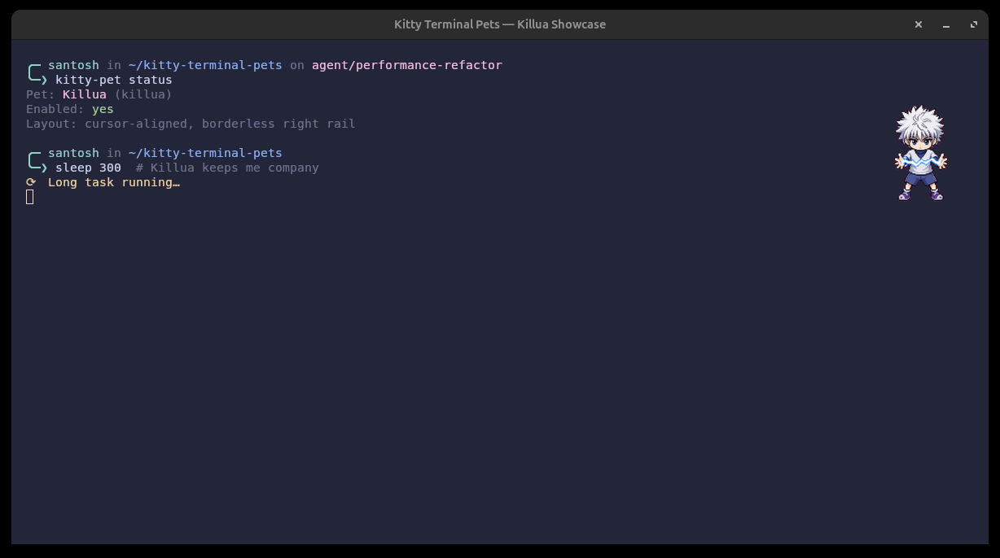
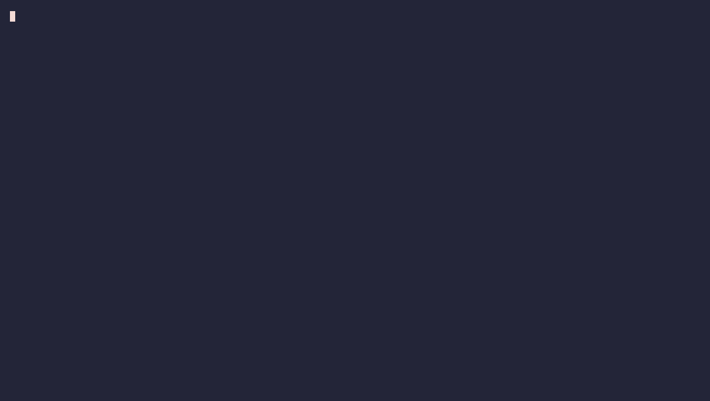
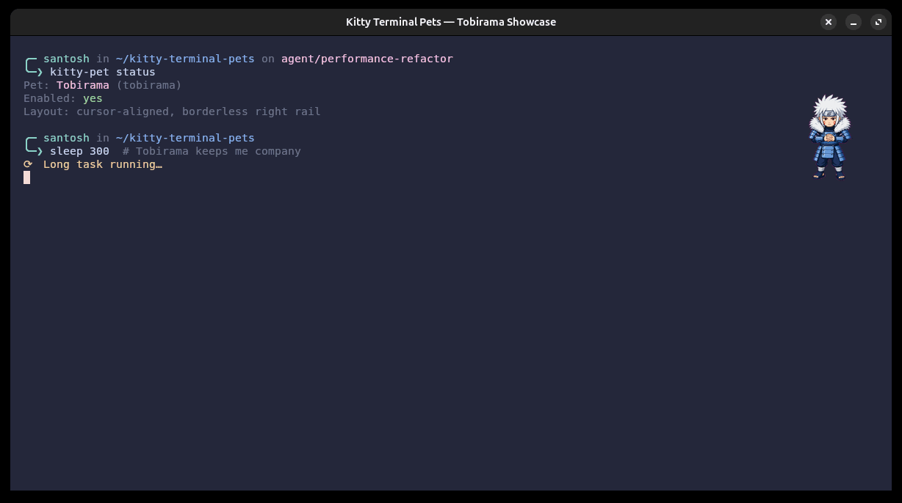

Killua
Godspeed mode: activated.
Tiny animated coworkers that follow your command line and react when work starts or finishes. Built for Kitty on Linux and macOS, and carefully kept away from your keyboard input.

Captured on the machine that started the project. Scroll, swipe, or use the arrows to meet the rest of the crew.

Godspeed mode: activated.

A tiny captain for long commands.
Quietly keeping watch over the build.

Serious focus for serious terminal work.
Character pet files are not bundled with the project; these are contextual captures of locally installed Petdex pets.
No shell traps, no TTY readers, and no per-keystroke hooks. Your terminal remains your terminal.
It finds pets in ~/.codex/pets, plus its own neutral pet folder.
Byte Cat is included, and the installer handles the config, private environment, and user service.
bash <(curl -fsSL https://raw.githubusercontent.com/Soontosh/kitty-terminal-pets/main/install.sh)